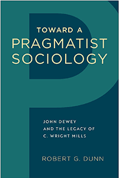

<HTML><head><script> (function(i,s,o,g,r,a,m){i['GoogleAnalyticsObject']=r;i[r]=i[r]||function(){  (i[r].q=i[r].q||[]).push(arguments)},i[r].l=1*new Date();a=s.createElement(o),  m=s.getElementsByTagName(o)[0];a.async=1;a.src=g;m.parentNode.insertBefore(a,m)   })(window,document,'script','//www.google-analytics.com/analytics.js','ga');   ga('create', 'UA-43183130-1', 'temple.edu');   ga('send', 'pageview'); </script><title>Robert G. Dunn: Toward a Pragmatist Sociology - Print</TITLE><link rel="stylesheet" href="../general.css" type="text/css"><SCRIPT LANGUAGE = JAVASCRIPT></SCRIPT></HEAD><BODY LINK="#3152A5" VLINK="#3152A5" ALINK=Gray BGCOLOR=White><CENTER><P CLASS=intro><br>An original study that mines the work of John Dewey and C. Wright Mills to animate a more relevant and critical sociology<br><br></P></CENTER><br>&nbsp;<!--none//--><Table width="100%" border=0 cellspacing=5><tr><td width="175" align="center"></td><td>
	
	<h1 class = "booktitle">Toward a Pragmatist Sociology</h1> 
	<h1 class = "subtitle">John Dewey and the Legacy of C. Wright Mills</h1>
	<h3 class="author">Robert G. Dunn </h3>
	
	<p class="info">
	<p class="info">cloth EAN:  978-1-4399-1459-5 (ISBN:1-4399-1459-1)</br>$45.00, Feb 18, <font color=#990033>Available</font><br><p class="info">Electronic Book EAN: 978-1-4399-1461-8 (ISBN:1-4399-1461-3)</br>$45.00, Feb 18, <font color=#990033>Available</font><br>
	<p class="info">204 pp, 5.5 x  8.25 </p></td></tr></table></P></td></tr></table><BR>
	
	
	
	<BLOCKQUOTE>
		<p><i>"With </i>Toward a Pragmatist Sociology<i>, Robert Dunn has taken on a massive intellectual task, the goal of which is to reinvigorate the discipline of sociology. One of the early roots of the field, a deep concern for the practical betterment of society, never achieved a high or sustained status within the disciplinary boundaries. While C. Wright Mills is well known, Dunn's ability to seamlessly and convincingly resituate Mills in the pragmatist tradition will surprise many."</i><br>&#8212;<b>Troy Duster</b>, Chancellor's Professor Emeritus, University of California, Berkeley<br>
	</BLOCKQUOTE>
	
	<P><p>In <i>Toward a Pragmatist Sociology, </i>Robert Dunn explores the relationship between the ideas and principles of philosopher and educator John Dewey and sociologist C. Wright Mills to provide a philosophical and theoretical foundation for the development of a critical and public sociology. Dunn recovers an intellectual and conceptual framework for transforming sociology into a more substantive, comprehensive, and socially useful discipline. <p>Arguing that Dewey and Mills shared a common vision of a relevant, critical, public sociology dedicated to the solution of societal problems, <i>Toward a Pragmatist Sociology</i> investigates the past and present state of the discipline, critiquing its dominant tendencies, and offering historical examples of alternatives to conventional sociological approaches. This original treatment of two influential American thinkers whose work offers a conception of and model for a sociology with public relevance and a sense of moral and political purpose should inspire future sociologists and others to regard the discipline as not only a science but also an intellectual, moral, and political enterprise.<br>
		
		<P CLASS="top"><A HREF="#top">BACK TO TOP</A></P></p>
		
		<P><h2  class="inpageheading">
			
		<A NAME="excerpt"></a>Excerpt</h2><p><A HREF="http://www.temple.edu/tempress/chapters_2400/2441_ch1.pdf">Read the Introduction (pdf).</A><br>
			
		<P CLASS="top"><A HREF="#top">BACK TO TOP</A></P></P><P></b></p>
	
	<p><h2 class="inpageheading"><A NAME="contents"></a>
	Contents</h2><P><span style="font-family: 'Verdana';font-size: 13px;color: #231F20;" >
	Preface<br/>
	Acknowledgments<br/>
	<br>

	Introduction<br/>
	1. Against Sociological Formalism<br/>
	2. C. Mills and the Tradition of Social Criticism<br/>
	3. The Social Pragmatism of John Dewey<br/>
	4. The Unity of Theory and Practice<br/>
	5. Values, Social Science, Pragmatism, and Social Critique<br/>
	Conclusion<br/>
	<br>
	Notes<br/>
	References<br/>
	Index</span></P>
	
	<P CLASS="top"><A HREF="#top">BACK TO TOP</A></P></p>

<P><H2  class="inpageheading"><A NAME="author bio"></a>About the Author(s)</H2><p><b>Robert G. Dunn </b>is Professor Emeritus of Sociology, California State University, East Bay. He is the author of <i>Identifying Consumption: Subjects and Objects in Consumer Society</i> (Temple) and <i>Identity Crises: A Social Critique of Postmodernity.</i><br>
	
	<P CLASS="top"><A HREF="#top">BACK TO TOP</A></P></P></P>

<P><h2 class="inpageheading"><a name="subjects"></a>Subject Categories</h2> <p><a href="http://www.temple.edu/tempress/sociology.html" target="_top">
	Sociology</a> <br><a href="http://www.temple.edu/tempress/philosophy.html" target="_top">
	Philosophy and Ethics</a> <br><a href="" target="_top"></a> <br><a href="" target="_top"></a> <br><a href="" target="_top"></a> </p></P><P></P>

<P CLASS="top"><A HREF="#top">BACK TO TOP</A></P></td><td width=2%>&nbsp;</td><td width=5>&nbsp;</td></tr></table><BR><font face="Arial" size="1"><a href="copyright.html" OnMouseOver="window.status='Web Copyright Policy';return true;" OnMouseOut="window.status=''" TITLE="Web Copyright Policy">&copy;</a> 2018 <a href="http://www.temple.edu" target="new" OnMouseOver="window.status='Link to Temple University home page';return true;" OnMouseOut="window.status=''" TITLE="Link to Temple University home page">Temple University</a>. All Rights Reserved. This page: http://www.temple.edu/tempress/titles/2441_reg.html</font></BODY></HTML>                    
                 
